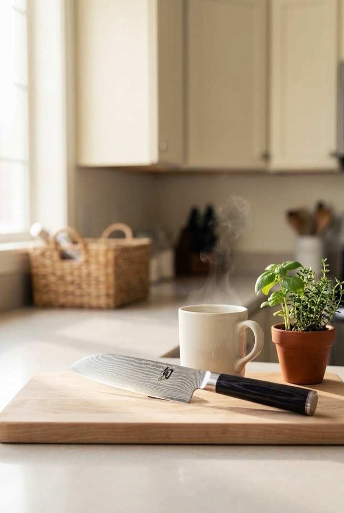
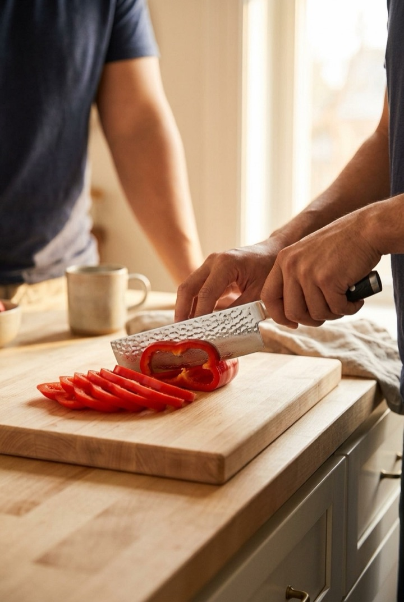
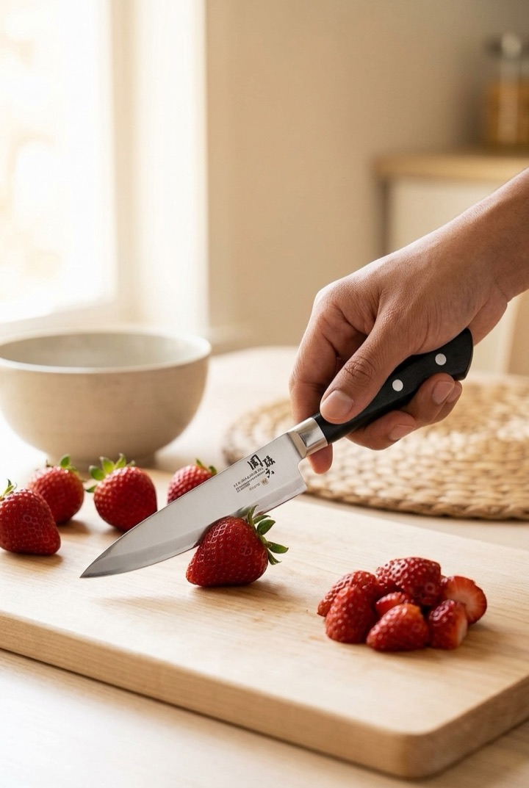
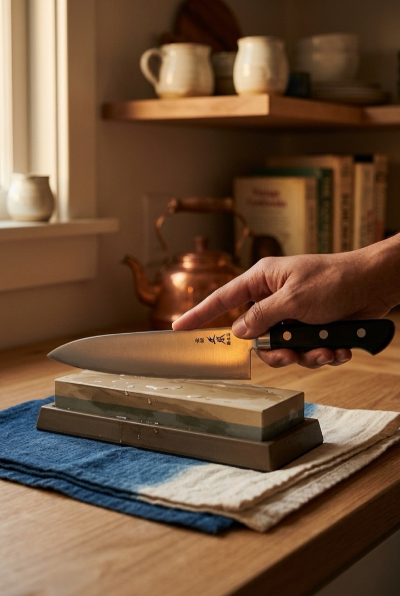

Not one knife doing four jobs -- four different knives, each making a different, honest case for itself. Two functional, two about how it feels to own the thing. All four are still sold today, all four ship from Japan or under a Japanese maker's name, and none of them require a special occasion to use.
A nakiri's defining feature is a perfectly flat cutting edge -- unlike a Western chef's knife, which curves for a rocking motion, the nakiri is built to travel through a vegetable in one straight pass, edge fully in contact with the board from heel to tip the entire way down. Fewer strokes, more even slices, less crushed produce at the cut line.

As an Amazon Associate, I earn from qualifying purchases.
This one sounds backwards until you've actually used a dull knife on something small. A dull blade needs more downward force to cut, and force applied to a surface that won't give way is exactly what makes a blade skid sideways -- onto a fingertip instead of a strawberry. A genuinely sharp edge does the cutting on its own, with light, controlled pressure. It's a point most professional culinary schools teach directly: keep your knives sharp, because a sharp knife is the safer tool.

As an Amazon Associate, I earn from qualifying purchases.
Damascus steel is made by folding and forge-welding layers of different steel together, then etching the blade so the layer boundaries show as a visible, wavy pattern -- a byproduct of the forging process itself, not a printed or painted design. It means the knife you reach for on an ordinary Tuesday morning is also, quietly, a small handmade object. That's a different relationship than most kitchen tools offer: something to use up and replace versus something you notice.
As an Amazon Associate, I earn from qualifying purchases.
A good Japanese knife is built to be sharpened on a whetstone for years, not discarded once it dulls. That changes the maintenance itself from a chore into something closer to a small ritual -- a few minutes with a stone and water, done by hand. The Masamoto name on this blade traces back to a knife house that's supplied Tokyo's Edo-mae sushi chefs since 1866; a knife with that kind of institutional trust behind it is, by design, meant to be cared for across decades, not seasons.

As an Amazon Associate, I earn from qualifying purchases.
None of these four is trying to be an all-purpose replacement for the others -- a nakiri won't break down a chicken, and a petty knife isn't built for a whole squash. What they share is that each one earns its place through a specific, real difference: how it cuts, how it fails safely instead of dangerously, how it looks resting on a cutting board, or how it asks to be cared for. That's what actually changes in a kitchen that has one of these in it -- not a single dramatic before-and-after, but four small ones.
This page contains affiliate links -- if you buy through one, it costs you nothing extra and helps support this site. The safety and Damascus-steel claims above reflect commonly cited culinary-industry guidance and standard bladesmithing technique, not manufacturer marketing claims specific to any one product.